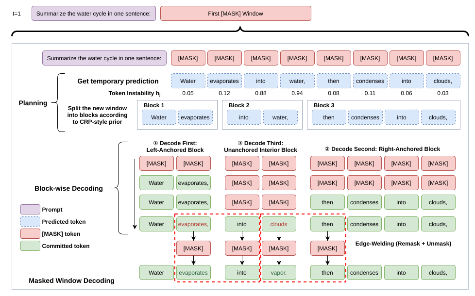
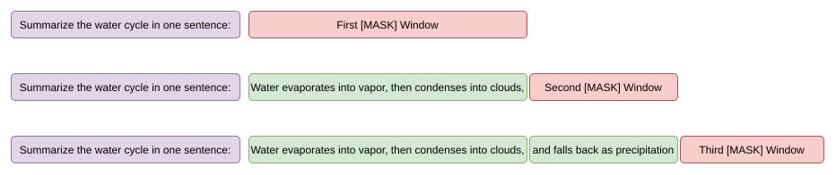
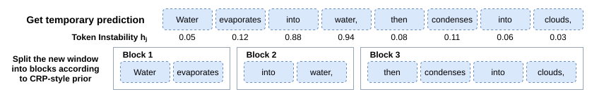
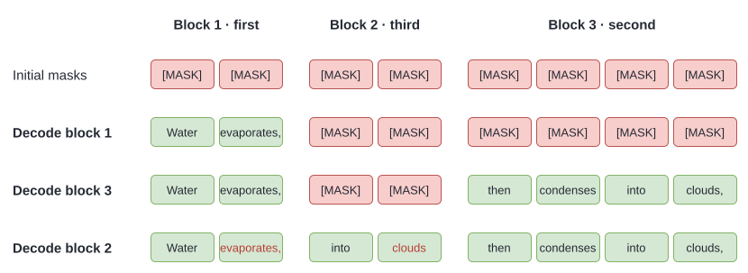
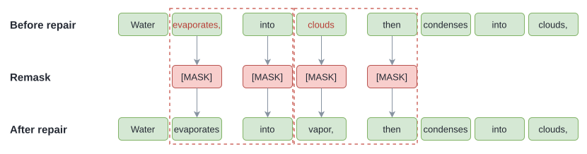

Why length and block structure must adapt together
Diffusion language models refine masked token positions in parallel. Many decoders fix the response length in advance: short windows can truncate an answer, while long windows allocate unnecessary positions.
Appending new positions also creates a structural problem. The decoder needs to group them into contiguous blocks, choose a decoding order, and reconcile neighboring block boundaries.
Research questionHow can a frozen diffusion LM adapt response length, token blocks, and decoding order together?
How DyStruct decodes a growing response
The overview retains the complete token trace. Select a stage for a larger view of that part of the method. A window is a newly appended region of masked positions; a block is a contiguous subset of that window.
Adapt the next window’s length
A stable preceding window permits a larger expansion; higher instability restricts the next window. The chosen number of masked positions is appended to the response.
Infer contiguous token blocks
A short diagnostic pass measures uncertainty and prediction changes. Boundary evidence and a Chinese Restaurant Process–style prior determine whether neighboring positions continue a block or begin a new one.

Use stable blocks as decoded context
The scheduler prioritizes lower-instability blocks with decoded neighbors. More unstable blocks receive additional refinement. Here, the outer blocks are resolved before the middle block.

Reconcile neighboring block boundaries
Low-confidence tokens near a block interface are remasked and refined using the neighboring decoded text. Positions outside the repair interval stay fixed. Expansion repeats until end-of-sequence or the length cap.

Local evidence, structured inference
For a given window length, block partitioning combines diagnostic observations with a prior over contiguous partitions. In simplified conditional notation:
The full framework also models window growth and block scheduling; the paper gives the complete factorization and staged inference procedure.
Results
DyStruct improves the Base decoder on all five evaluated benchmarks with both LLaDA-8B-Base and Dream-7B-Base.
+4.4 percentage pointsLLaDA BBH · 44.9 Base to 49.3 DyStruct
+6.8 percentage pointsDream HumanEval · 40.2 Base to 47.0 DyStruct
Scroll horizontally to view all benchmarks.
| Backbone / decoder | HumanEval | MBPP | GSM8K | MATH | BBH |
|---|---|---|---|---|---|
| LLaDA-8B-Base | |||||
| Base | 32.3 | 39.8 | 70.3 | 30.5 | 44.9 |
| + DAEDAL | 33.5 | 40.2 | 70.8 | 31.2 | 43.7 |
| + DyStruct | 34.8 | 41.4 | 72.1 | 31.4 | 49.3 |
| Dream-7B-Base | |||||
| Base | 40.2 | 57.2 | 74.9 | 38.2 | 51.7 |
| + DAEDAL | 34.7 | 54.4 | 74.3 | 38.6 | 44.8 |
| + DyStruct | 47.0 | 59.8 | 75.1 | 38.8 | 52.5 |
Evaluation settings and uncertainty
HumanEval and MBPP report greedy pass@1; GSM8K and MATH use strict match; BBH uses exact match. The few-shot counts, in that order, are 0, 3, 5, 4, and 3.
The maximum generation length and base unmasking-iteration budget are both 256. DyStruct allocates refinement across adaptively sized blocks; a shared base budget does not establish matched total FLOPs. Experiments use a single NVIDIA H100 GPU.
The table shows point estimates. Standard errors are reproduced below from the paper; they are not confidence intervals or significance labels.
Scroll horizontally to view all benchmarks.
| Backbone / decoder | HumanEval | MBPP | GSM8K | MATH | BBH |
|---|---|---|---|---|---|
| LLaDA Base | 3.6 | 2.1 | 1.2 | 0.6 | 0.5 |
| LLaDA + DAEDAL | 3.7 | 2.1 | 1.2 | 0.6 | 0.5 |
| LLaDA + DyStruct | 3.7 | 2.2 | 1.2 | 0.6 | 0.5 |
| Dream Base | 2.7 | 2.2 | 1.1 | 0.6 | 0.5 |
| Dream + DAEDAL | 2.7 | 2.2 | 1.2 | 0.6 | 0.5 |
| Dream + DyStruct | 3.9 | 2.1 | 1.9 | 0.6 | 0.5 |
Component ablations
Replacing the scheduler with fixed left-to-right block order lowers LLaDA MATH by 1.1 percentage points. Removing boundary repair lowers HumanEval by 1.9 percentage points.
Scroll horizontally to view all benchmarks.
| Configuration | HumanEval | MBPP | GSM8K | MATH | BBH |
|---|---|---|---|---|---|
| Full DyStruct | 34.8 | 41.4 | 72.1 | 31.4 | 49.3 |
| Fixed left-to-right block order | 33.5 | 41.2 | 71.8 | 30.3 | 49.3 |
| Without boundary repair | 32.9 | 40.8 | 70.5 | 31.2 | 49.1 |
| Without both | 32.9 | 41.0 | 69.7 | 31.0 | 49.1 |
Evaluation scope. The evidence covers two backbones and five benchmarks under a 256-token output cap. Backbone weights remain frozen, while diagnostic coefficients are calibrated using validation trajectories with ground-truth sequences. A shared base iteration budget does not establish matched total FLOPs.
A concrete boundary error
Repair a code expression using its context
The paper’s HumanEval example asks whether two entries in numbers have an absolute difference below a threshold. The surrounding code indexes the array with i and j:
def check_diff(numbers, threshold):
for i in range(len(numbers)):
for j in range(i + 1, len(numbers)):Before boundary repair
(x - y)The independently decoded expression uses variables that do not match the shown context.
After boundary repair
(numbers[i] - numbers[j])Local re-evaluation recovers an expression consistent with the surrounding array indices.
Qualitative trace excerpt from the paper. The snippets show the loop context and difference expression, not a complete executable function or a new baseline evaluation.
Cite DyStruct
@misc{sun2026dystruct,
title={DyStruct: Dynamically Structured Diffusion Language
Model Decoding via Bayesian Inference},
author={Bian Sun and Kevin Zhai and Mubarak Shah
and Zhenyi Wang},
year={2026},
eprint={2605.09820},
archivePrefix={arXiv},
primaryClass={cs.LG},
url={https://arxiv.org/abs/2605.09820}
}